Semi-Orthogonal EBMF with EBMNM
Joonsuk Kang
2021-12-01
Last updated: 2021-12-02
Checks: 7 0
Knit directory: mf/
This reproducible R Markdown analysis was created with workflowr (version 1.6.2). The Checks tab describes the reproducibility checks that were applied when the results were created. The Past versions tab lists the development history.
Great! Since the R Markdown file has been committed to the Git repository, you know the exact version of the code that produced these results.
Great job! The global environment was empty. Objects defined in the global environment can affect the analysis in your R Markdown file in unknown ways. For reproduciblity it’s best to always run the code in an empty environment.
The command set.seed(20201010) was run prior to running the code in the R Markdown file. Setting a seed ensures that any results that rely on randomness, e.g. subsampling or permutations, are reproducible.
Great job! Recording the operating system, R version, and package versions is critical for reproducibility.
Nice! There were no cached chunks for this analysis, so you can be confident that you successfully produced the results during this run.
Great job! Using relative paths to the files within your workflowr project makes it easier to run your code on other machines.
Great! You are using Git for version control. Tracking code development and connecting the code version to the results is critical for reproducibility.
The results in this page were generated with repository version 52e4fb8. See the Past versions tab to see a history of the changes made to the R Markdown and HTML files.
Note that you need to be careful to ensure that all relevant files for the analysis have been committed to Git prior to generating the results (you can use wflow_publish or wflow_git_commit). workflowr only checks the R Markdown file, but you know if there are other scripts or data files that it depends on. Below is the status of the Git repository when the results were generated:
Ignored files:
Ignored: .Rhistory
Ignored: .Rproj.user/
Untracked files:
Untracked: .DS_Store
Untracked: SO-EBMF-EBMNM.html
Untracked: analysis/SO-EBMF-EBMNM (joonsukkang@uchicago.edu).Rmd
Untracked: analysis/alt-flash-ebnm.Rmd
Untracked: analysis/alt-flash-nonneg.Rmd
Untracked: analysis/alt-flash-nonneg_largeY.Rmd
Untracked: analysis/alt-flash-normal_largeY.Rmd
Untracked: analysis/altflash_simulation_Yusha.Rmd
Untracked: analysis/bingham.Rmd
Untracked: analysis/bingham_constant.Rmd
Untracked: analysis/create_binary_toy2.Rmd
Untracked: analysis/demo3_toy.Rmd
Untracked: analysis/demo7_ebfa_hb_g1_K.Rmd
Untracked: analysis/demo7_ebfa_hb_g2_K.Rmd
Untracked: analysis/demo8_splash.Rmd
Untracked: analysis/flashImpute_ML100k.Rmd
Untracked: analysis/flashImpute_ML1M.Rmd
Untracked: analysis/flip_correlation.Rmd
Untracked: analysis/flipping_pdf.Rmd
Untracked: analysis/infinitefactor_toy.Rmd
Untracked: analysis/model_exp_prior_v20201110m.Rmd
Untracked: analysis/model_invgam_prior.Rmd
Untracked: analysis/multiplicative.Rmd
Untracked: analysis/site_libs (joonsukkang@uchicago.edu)/
Untracked: analysis/sliding_correlation.Rmd
Untracked: analysis/sliding_pdf.Rmd
Untracked: analysis/so-ebmf-ebmnm-binary-toy.Rmd
Untracked: analysis/sparseNMF.Rmd
Untracked: analysis/temp.Rmd
Untracked: analysis/toy_Yusha_nonneg_2.Rmd
Untracked: analysis/toy_Yusha_oracle_flashier.Rmd
Untracked: analysis/toy_Yusha_oracle_more seeds.Rmd
Untracked: analysis/toy_p_notfixK.Rmd
Untracked: analysis/y2_NoTargetsByTF.R
Untracked: analysis/y2_eb.Rmd
Untracked: analysis/y2_toy.Rmd
Untracked: analysis/y2_toy_500.Rmd
Untracked: analysis/y2_toy_highd.Rmd
Untracked: analysis/y2_toy_highd_covver.Rmd
Untracked: analysis/y2_toy_lastday_backtosimple.Rmd
Untracked: analysis/y2_toy_master.Rmd
Untracked: analysis/y2_toy_n.Rmd
Untracked: analysis/y2_toy_n_K3.Rmd
Untracked: code/alt-flash-ebnm.R
Untracked: code/alt-flash.R
Untracked: code/alt-flash_v20210819.R
Untracked: code/ebmnm.R
Untracked: code/model_exp_v20201110.R
Untracked: code/muNMF.R
Untracked: code/nmu.R
Untracked: code/semiNMF.R
Untracked: code/soebmf.R
Untracked: code/workflowr_codes.R
Untracked: data/eigvals.rds
Untracked: data/hTFtarget_NoTargetsByTF.txt
Untracked: data/metro_results.txt
Untracked: figure/
Untracked: output/.Rapp.history
Untracked: output/Likelihood.gif
Untracked: output/altflash_simulation_Yusha_20211013_res1.rds
Untracked: output/altflash_simulation_Yusha_20211013_res3.rds
Untracked: output/nonneg_v20210824_large_fit.alt.p.rds
Untracked: output/nonneg_v20210824_large_fit.alt.rds
Untracked: output/nonneg_v20210824_large_fit.f.ext.rds
Untracked: output/nonneg_v20210824_large_fit.f.seq.rds
Untracked: output/nonneg_v20210824_large_fit.init.rds
Untracked: output/nonneg_v20210824_small_fit.alt.p.rds
Untracked: output/nonneg_v20210824_small_fit.alt.rds
Untracked: output/nonneg_v20210824_small_fit.f.ext.rds
Untracked: output/nonneg_v20210824_small_fit.f.seq.rds
Untracked: output/nonneg_v20210824_small_fit.init.rds
Untracked: output/tree_toy_altflash_X2_v2021_1012_1309.rds
Untracked: output/tree_toy_altflash_X2n_a_v2021_1012_1309.rds
Untracked: output/tree_toy_altflash_X2n_b_v2021_1012_1309.rds
Untracked: output/tree_toy_altflash_dX2_v2021_1012_1309.rds
Untracked: output/tree_toy_altflash_dX2n_a_v2021_1012_1309.rds
Untracked: output/tree_toy_altflash_dX2n_b_v2021_1012_1309.rds
Untracked: output/tree_toy_altflash_mat2_v2021_1012_1309.rds
Untracked: output/tree_toy_altflash_mat2n_a_v2021_1012_1309.rds
Untracked: output/tree_toy_altflash_mat2n_b_v2021_1012_1309.rds
Untracked: temp-blog/
Untracked: writing/
Unstaged changes:
Deleted: .Rprofile
Deleted: .gitattributes
Modified: .gitignore
Modified: README.md
Modified: _workflowr.yml
Deleted: analysis/Alt-Flash.Rmd
Deleted: analysis/ChoosingW.Rmd
Modified: analysis/_site.yml
Modified: analysis/about.Rmd
Modified: analysis/alt-flash-normal.Rmd
Deleted: analysis/alt-flash-normal_v20210825.Rmd
Modified: analysis/alt-flash-sanity.Rmd
Modified: analysis/binary_toy_binary_altflash.Rmd
Modified: analysis/binary_toy_denoising.Rmd
Modified: analysis/binary_toy_hclust.Rmd
Modified: analysis/binary_toy_ncut.Rmd
Modified: analysis/binary_toy_nonneg_pe.Rmd
Modified: analysis/bingham_variance.Rmd
Deleted: analysis/concentration.Rmd
Modified: analysis/create_binary_toy.Rmd
Modified: analysis/demo2_toy.Rmd
Modified: analysis/demo5_model_exp_or_expmix.Rmd
Modified: analysis/demo6_ebfa_hb_g1.Rmd
Modified: analysis/demo6_ebfa_hb_g2.Rmd
Modified: analysis/demo_toy.Rmd
Modified: analysis/flashier_point_laplace.Rmd
Modified: analysis/hierarchical.Rmd
Modified: analysis/index.Rmd
Modified: analysis/license.Rmd
Modified: analysis/likelihood_rdmatrix.Rmd
Modified: analysis/model_exp_mixture_prior.Rmd
Modified: analysis/model_exp_prior.Rmd
Modified: analysis/prior.Rmd
Modified: analysis/rank1_setup.Rmd
Modified: analysis/sparsity_resvar.Rmd
Modified: analysis/toy_Yusha_nonneg_1.Rmd
Modified: analysis/toy_Yusha_oracle.Rmd
Modified: analysis/toy_Yusha_svd.Rmd
Modified: analysis/toy_p.Rmd
Modified: analysis/tree_toy_altflash_1.Rmd
Modified: analysis/tree_toy_flashier.Rmd
Modified: analysis/tree_toy_flashier_denoising.Rmd
Modified: analysis/warmstart.Rmd
Modified: code/README.md
Modified: code/alt-flash_v20210825.R
Modified: code/alt-flash_v20211010.R
Modified: code/alt-flash_v20211013.R
Modified: code/alt-flash_v20211017.R
Modified: code/alt-flash_v20211020.R
Modified: code/flash.backfit_elbo_tracking.R
Modified: code/flashImpute.R
Modified: code/flashImpute.cpp
Modified: data/README.md
Modified: data/binary_toy.rds
Modified: mf.Rproj
Modified: output/GaussianBall.gif
Modified: output/GaussianBall.jpg
Modified: output/LaplacianBall.gif
Modified: output/LaplacianBall.jpg
Modified: output/README.md
Deleted: output/alt-flash-normal-elbo.pdf
Note that any generated files, e.g. HTML, png, CSS, etc., are not included in this status report because it is ok for generated content to have uncommitted changes.
These are the previous versions of the repository in which changes were made to the R Markdown (analysis/SO-EBMF-EBMNM.Rmd) and HTML (docs/SO-EBMF-EBMNM.html) files. If you’ve configured a remote Git repository (see ?wflow_git_remote), click on the hyperlinks in the table below to view the files as they were in that past version.
| File | Version | Author | Date | Message |
|---|---|---|---|---|
| Rmd | 52e4fb8 | joonsukkang | 2021-12-02 | soebmf with ebmnm |
some functions
source('code/ebmnm.R')
source('code/soebmf.R')── Attaching packages ─────────────────────────────────────── tidyverse 1.3.1 ──✓ ggplot2 3.3.5 ✓ purrr 0.3.4
✓ tibble 3.1.4 ✓ dplyr 1.0.7
✓ tidyr 1.1.4 ✓ stringr 1.4.0
✓ readr 2.0.2 ✓ forcats 0.5.1── Conflicts ────────────────────────────────────────── tidyverse_conflicts() ──
x dplyr::filter() masks stats::filter()
x dplyr::lag() masks stats::lag()library(tidyverse)
library(pheatmap)
plotL <- function(A.l, title){
K <- ncol(A.l)
n <- nrow(A.l)
data.frame(L=c(A.l),
factor=rep(1:K, each=n),
x=rep(1:n, times=K)) %>%
mutate(factor=as.factor(factor)) -> df.plot
df.plot %>%
ggplot()+
geom_line(aes(x=x, y=L, group=factor, col=factor))+
facet_wrap(~factor, scales='free_y') +ggtitle(title)-> figL
print(figL)
}toy data
set.seed(312)
n <- 200
p <- 50
L0 <- cbind(
matrix(rep(c(1,1,1,1), each=n/4, ncol=1)),
matrix(rep(c(1,1,0,0), each=n/4, ncol=1)),
matrix(rep(c(0,0,1,1), each=n/4, ncol=1)),
matrix(rep(c(1,0,0,0), each=n/4, ncol=1)),
matrix(rep(c(0,1,0,0), each=n/4, ncol=1)),
matrix(rep(c(0,0,1,0), each=n/4, ncol=1)),
matrix(rep(c(0,0,0,1), each=n/4, ncol=1))
)
K <- ncol(L0)
F0 <- rstiefel::rustiefel(m=p, R=K)
pheatmap(L0, cluster_rows=F, cluster_cols=F)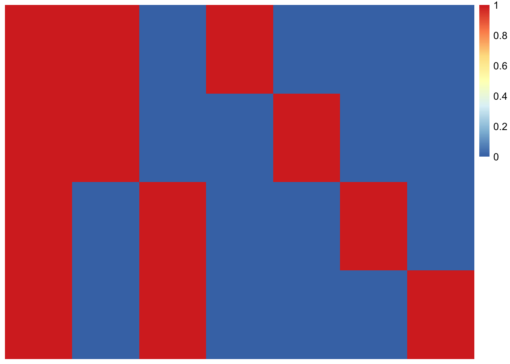
pheatmap(F0, cluster_rows=F, cluster_cols=F)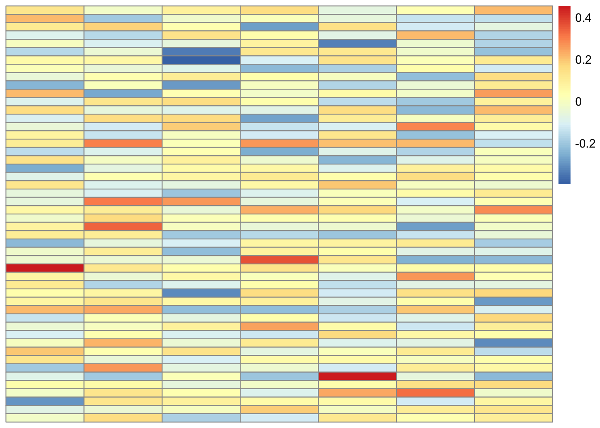
X0 <- L0 %*% t(F0)
X <- X0 + matrix(rnorm(n*p, mean=0, sd=0.1), nrow=n, ncol=p)
svdX0 <- svd(X0)
svdX0$d[1:10] # rank 4 [1] 1.870829e+01 1.224745e+01 7.071068e+00 7.071068e+00 4.851398e-15
[6] 3.830029e-15 3.504616e-15 1.658593e-15 1.658593e-15 1.658593e-15plotL(svdX0$u[,1:4], 'left singular vectors')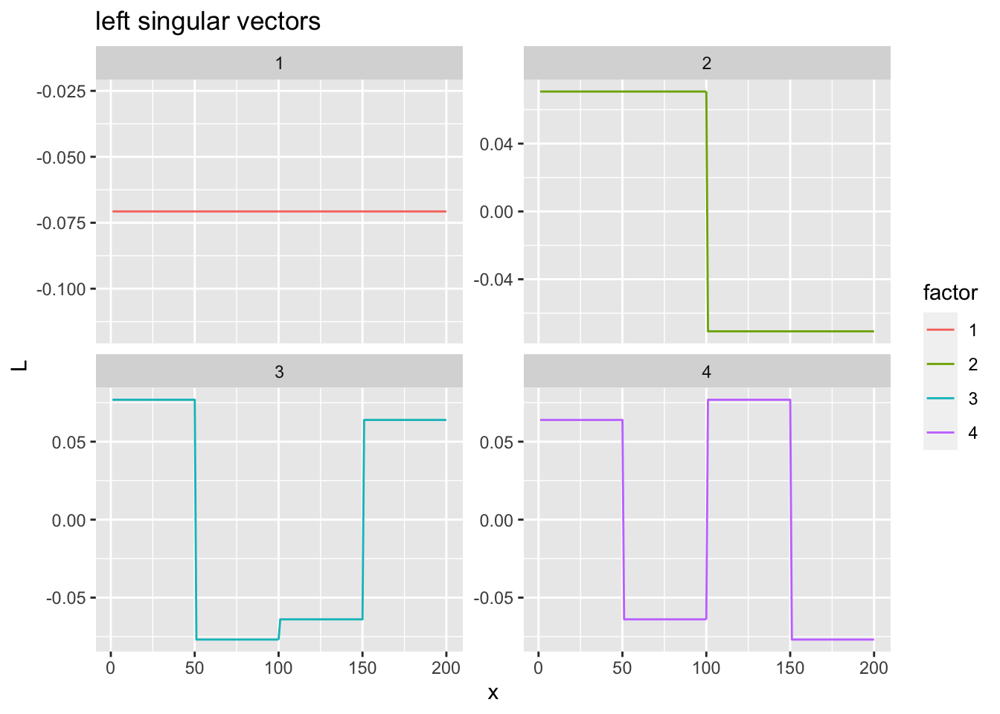
svdX <- svd(X)
svdX$d[1:10] # rank 4 + noise [1] 18.805903 12.155488 7.416949 7.139440 1.985817 1.945139 1.928865
[8] 1.859255 1.821498 1.793931plotL(svdX$u[,1:6], 'left singular vectors')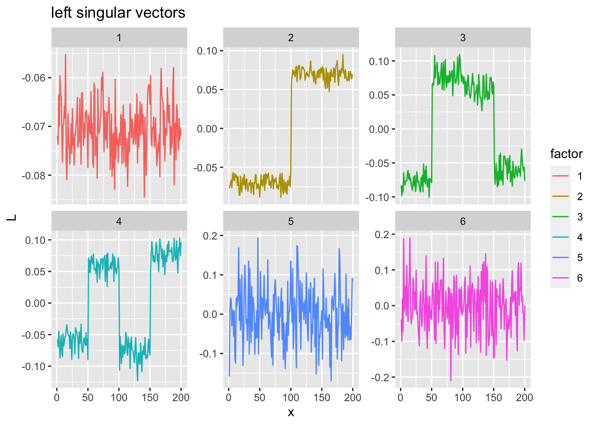
the SO-EBMF
ebmnm results: scaled binary grid
set.K <- 7; pf <- 'sbg'; set.seed <- 312
fit1 <- soebmf(Y=X, K=set.K, g.l.pf=pf, intercept=FALSE, init.F='rand', seed=set.seed)
plotL(fit1$EL, paste0('sbg + rand w/o intercept; seed=', set.seed))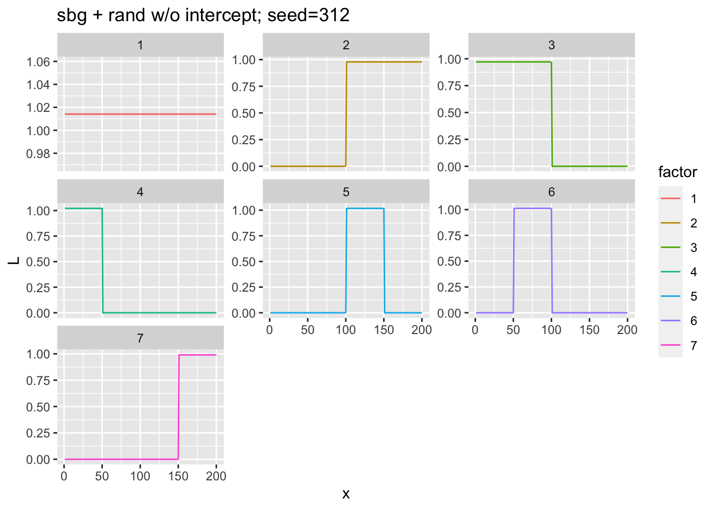
fit1$elbo[1] 8778.84fit2 <- soebmf(Y=X, K=set.K-1, g.l.pf=pf, intercept=TRUE, init.F='rand', seed=set.seed)
plotL(fit2$mu0EL, paste0('sbg + rand + intercept; seed=', set.seed))
fit2$elbo[1] 8274.987set.K <- 7; pf <- 'sbg'; set.seed <- 312
fit1 <- soebmf(Y=X, K=set.K, g.l.pf=pf, intercept=FALSE, init.F='rand', seed=set.seed)
plotL(fit1$EL, paste0('sbg + rand w/o intercept; seed=', set.seed))fit1$elbo[1] 8778.84for (seed in 1:5){
fit <- soebmf(Y=X, K=set.K, g.l.pf=pf, intercept=FALSE, init.F='rand', seed=seed)
plotL(fit$EL, paste0('sbg + rand w/o; seed=', seed))
print(fit$elbo)
}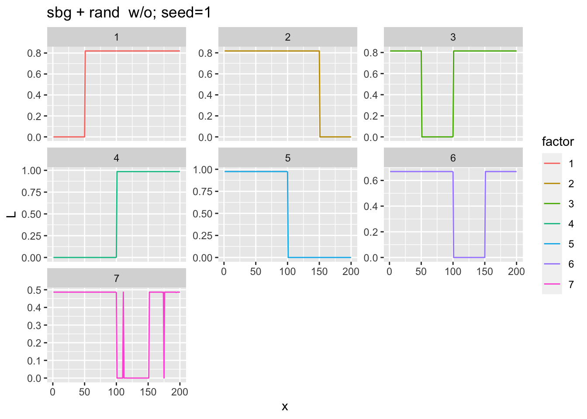
[1] 8520.423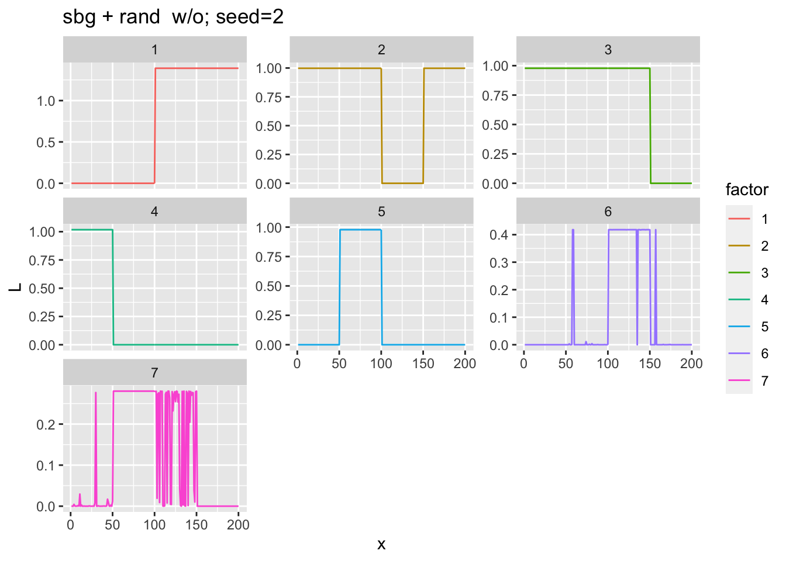
[1] 8847.889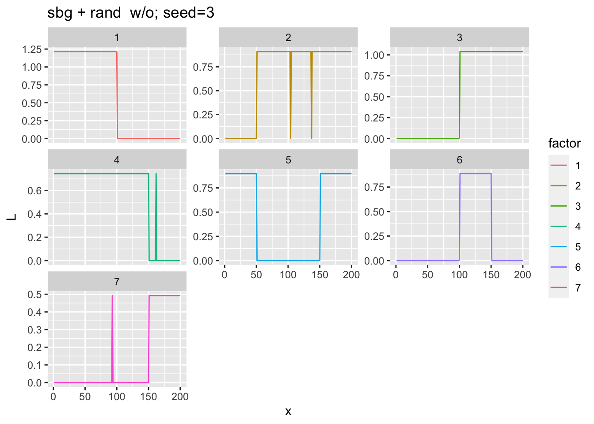
[1] 8468.561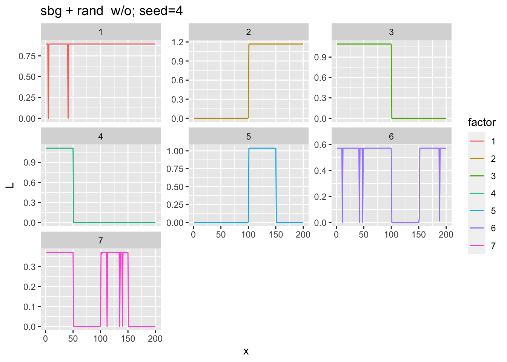
[1] 8248.179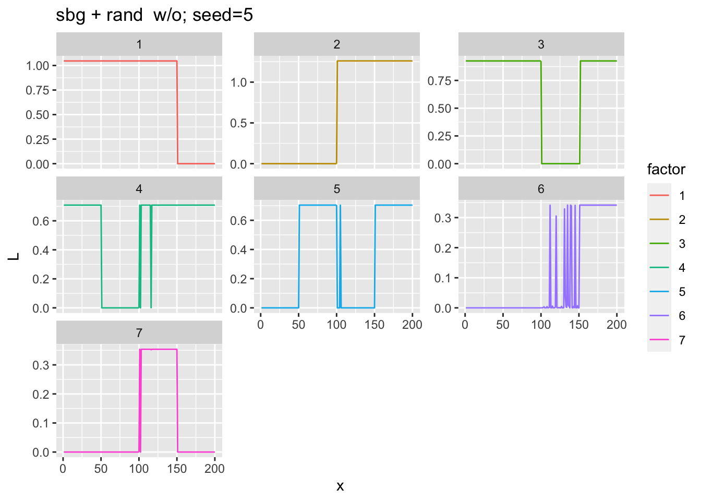
[1] 8131.693set.K <- 7; pf <- 'sbg'; set.seed <- 312
fit2 <- soebmf(Y=X, K=set.K-1, g.l.pf=pf, intercept=TRUE, init.F='rand', seed=set.seed)
plotL(fit2$mu0EL, paste0('sbg + rand + intercept; seed=', set.seed))
fit2$elbo[1] 8274.987for (seed in 1:5){
fit <- soebmf(Y=X, K=set.K-1, g.l.pf=pf, intercept=TRUE, init.F='rand', seed=set.seed)
plotL(fit$mu0EL, paste0('sbg + rand + intercept; seed=', set.seed))
fit$elbo
} 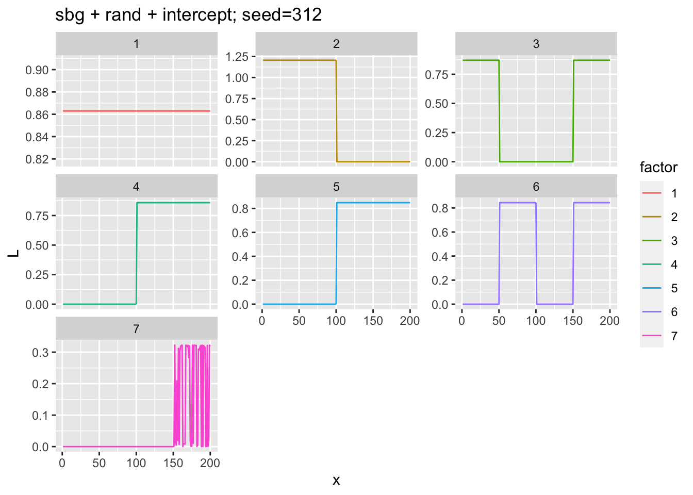
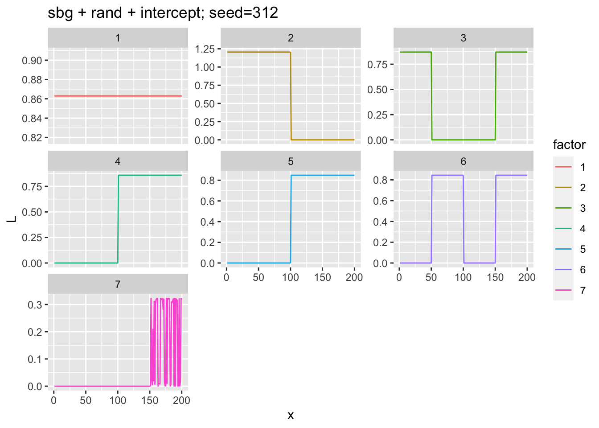

to do
experiments when K> true K; consider dropping factors after elbo convergence (null check?)
compare with real data: factor phylogeny paper?
interpretation as augmenting F;
ebmnm results: multivariate normal (with spherical covariance)
ebmnm results: approximate npmle
ebnm results
fit1 <- soebmf(Y=X, K=10, g.l.pf='normal')
plotL(fit1$EL, 'normal')
sqrt(colSums(fit1$EL^2))
fit1 <- soebmf(Y=X, K=10, g.l.pf='point_normal')
plotL(fit1$EL, 'point_normal')
sqrt(colSums(fit1$EL^2))
fit1 <- soebmf(Y=X, K=10, g.l.pf='point_exponential')
plotL(fit1$EL, 'point_exponential')
sqrt(colSums(fit1$EL^2))
fit1 <- soebmf(Y=X, K=10, g.l.pf='normal', intercept=FALSE)
plotL(fit1$EL, 'normal')
sqrt(colSums(fit1$EL^2))
fit1 <- soebmf(Y=X, K=10, g.l.pf='point_normal', intercept=FALSE)
plotL(fit1$EL, 'point_normal')
sqrt(colSums(fit1$EL^2))
fit1 <- soebmf(Y=X, K=10, g.l.pf='point_exponential', intercept=FALSE)
plotL(fit1$EL, 'point_exponential')
sqrt(colSums(fit1$EL^2))
sessionInfo()R version 4.1.1 (2021-08-10)
Platform: aarch64-apple-darwin20 (64-bit)
Running under: macOS Monterey 12.0.1
Matrix products: default
LAPACK: /Library/Frameworks/R.framework/Versions/4.1-arm64/Resources/lib/libRlapack.dylib
locale:
[1] en_US.UTF-8/en_US.UTF-8/en_US.UTF-8/C/en_US.UTF-8/en_US.UTF-8
attached base packages:
[1] stats graphics grDevices utils datasets methods base
other attached packages:
[1] pheatmap_1.0.12 forcats_0.5.1 stringr_1.4.0 dplyr_1.0.7
[5] purrr_0.3.4 readr_2.0.2 tidyr_1.1.4 tibble_3.1.4
[9] ggplot2_3.3.5 tidyverse_1.3.1 rstiefel_1.0.1 mixsqp_0.3-43
[13] mvtnorm_1.1-3 ebnm_0.1-52
loaded via a namespace (and not attached):
[1] fs_1.5.0 lubridate_1.8.0 RColorBrewer_1.1-2 httr_1.4.2
[5] rprojroot_2.0.2 tools_4.1.1 backports_1.3.0 utf8_1.2.2
[9] R6_2.5.1 irlba_2.3.3 DBI_1.1.1 colorspace_2.0-2
[13] withr_2.4.2 tidyselect_1.1.1 compiler_4.1.1 git2r_0.28.0
[17] cli_3.1.0 rvest_1.0.2 xml2_1.3.2 labeling_0.4.2
[21] horseshoe_0.2.0 scales_1.1.1 SQUAREM_2021.1 digest_0.6.28
[25] rmarkdown_2.11 deconvolveR_1.2-1 pkgconfig_2.0.3 htmltools_0.5.2
[29] highr_0.9 dbplyr_2.1.1 fastmap_1.1.0 invgamma_1.1
[33] rlang_0.4.12 readxl_1.3.1 rstudioapi_0.13 farver_2.1.0
[37] jquerylib_0.1.4 generics_0.1.1 jsonlite_1.7.2 REBayes_2.2
[41] magrittr_2.0.1 Matrix_1.3-4 Rcpp_1.0.7 munsell_0.5.0
[45] fansi_0.5.0 lifecycle_1.0.1 stringi_1.7.5 whisker_0.4
[49] yaml_2.2.1 grid_4.1.1 promises_1.2.0.1 crayon_1.4.2
[53] lattice_0.20-45 haven_2.4.3 splines_4.1.1 hms_1.1.1
[57] knitr_1.36 pillar_1.6.4 reprex_2.0.1 glue_1.4.2
[61] evaluate_0.14 trust_0.1-8 modelr_0.1.8 vctrs_0.3.8
[65] tzdb_0.2.0 httpuv_1.6.3 cellranger_1.1.0 gtable_0.3.0
[69] assertthat_0.2.1 ashr_2.2-47 xfun_0.25 broom_0.7.10
[73] later_1.3.0 truncnorm_1.0-8 workflowr_1.6.2 ellipsis_0.3.2